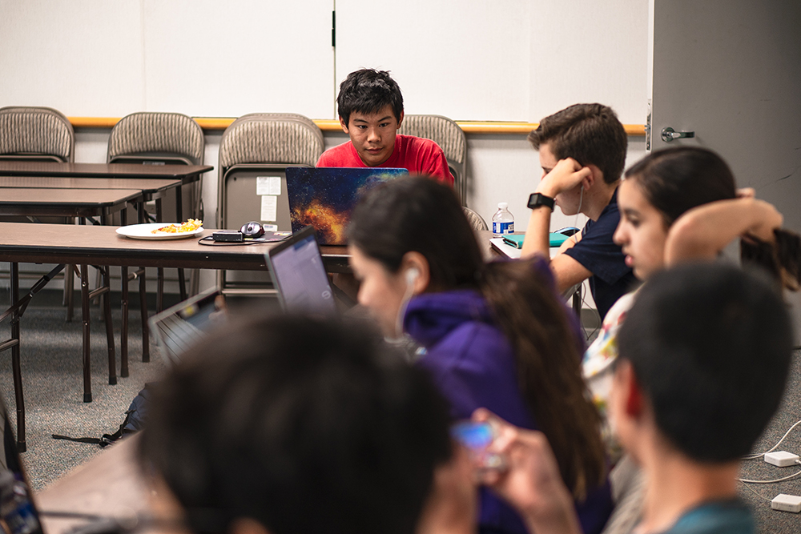
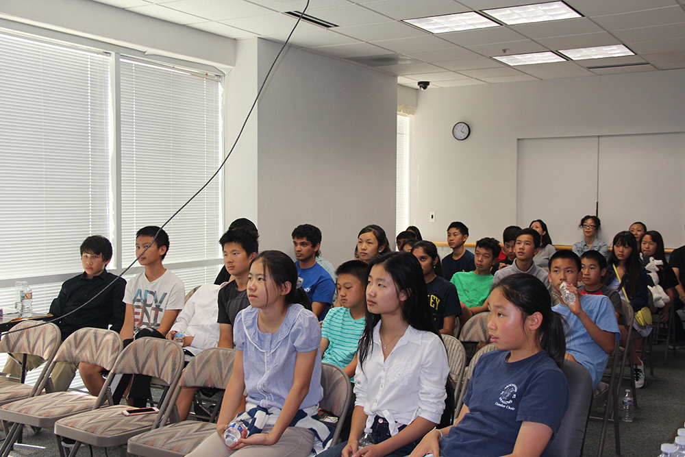

Overview
I founded and maintained Mindspark Summer, a top-rated summer program dedicated to providing a fun, hands-on environment for students. I singlehandedly generated over $53,000 in revenue over the past two years, and maintained an average of a 9/10 rating among over 120 students throughout our history.
Tasks include business management, extensive online and guerilla marketing, developing the web platform, writing and developing the 400+ page curriculum, and teaching and managing day-to-day operations during the program.

Process
Conception
I started the company back in 2015. Due to the fact that I started it very late into the season, I only gathered five students, teaching basic robotics skills over a week while losing money. Despite this failure, I had gathered the experience necessary to understand the industry better to run it in future years.
Re-Launch
Two years later, I decided to use the experience I'd gained to re-launch the camp, almost completely from scratch. I built a web platform from scratch that handled everything from surveys to a landing page to analytics to signups and payments. I wrote three hundred pages of curriculum for 4 classes, and taught the web course, hiring others to teach the other courses.
The result was a camp with 40+ students over four weeks with four different courses. This year, I generated $15,000 in revenue, and while impressive, it was not enough to create for a minimum wage job for myself after paying off the costs.
Final Year
Taking all the experience I'd gained, I decided to run the camp one final year. I also had significantly more time at that time, so I poured all of my time and energy into the business.
I significantly increased every aspect of my marketing plan, aggressively pursuing many different marketing and business strategies I had not previously thought of in the past. I created a new two-week course, and brought on various mentors including David Shen, a venture capitalist who designed the Yahoo logo.
For my efforts, I generated a further $38,000 in revenue with 80+ total students. This time, I had plenty after paying off what I owed to pay partially for college. I refined the curriculum, improved the hiring process, and hired higher quality instructors to make the camp significantly more fun for the students.

Business Model
I understood the audience, and thus priced the camp at a high price while giving absurdly high discounts. This would give a credibility boost I desperately needed, while keeping the price at a reasonable level. Introductory courses costed $449, while intermediate courses were $499. I later realized that Bay Area parents invest their kids' time, not the money, so thus my high prices were further justified.
I structured the marketing timeline by doing an initial brand recognition push initially before February, beginning to push for registrations by mid-March. Registrations sharply decrease after promotions conclude, thus I structured a lot of marketing pushes around this time to fit that. April is an incredibly slow month, lying awkwardly between the early birds and the last-minute registrations, so thus I slowed the marketing then. Finally,

Marketing Strategy
I knew I had to get the company's name out there, and I knew I needed to gather valuable market data, so I released a marketing survey promising a $50 discount on the camp. Upon submission, the user is greeted with a 48-hour countdown promising $100 off if they register within the next 48 hours, with an email sent at the 24-hour mark, to create urgency and encourage registrations.
As March approached, I began aggressively working on social media and guerilla marketing, targeting parents of kids of age 11-18. I flyered everywhere, posted in social media groups with special discount codes, and sent hundreds of cold emails to school administration, PTSAs, and programming clubs for promotion, all while carefully analyzing analytics data to see which marketing strategies worked and how I can improve the UI/UX design for the landing page.
As time went on, I began to attend summer camp fairs to directly connect with parents. In addition, I began to purchase paid advertisements on Facebook and on Google AdWords using funds I collected through prior registrations.
On the supply side, I did a bunch of job postings, promising a high wage for instructors. I conducted countless interviews and read through countless resumes to hand-select the best possible fit of our core value of a fun and engaging environment.
Reflection & Conclusion
Ultimately, through this experience, I grew significantly as a person and as an entrepreneur. Before then, I was the shy kid at school. I pushed myself to constantly exit my comfort zone during this project, and despite significant moral speedbumps (especially flyering and cold-emailing), I continued to work hard, making the business a success while simultaneously improving myself as a person.